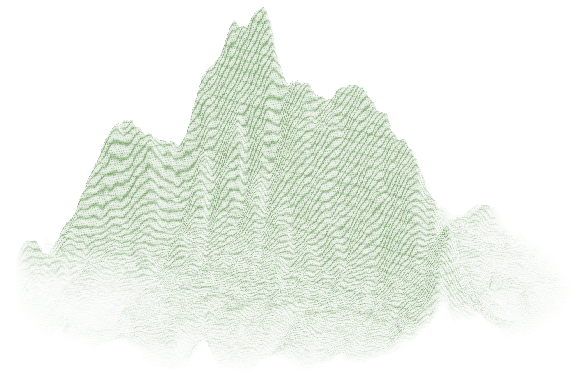
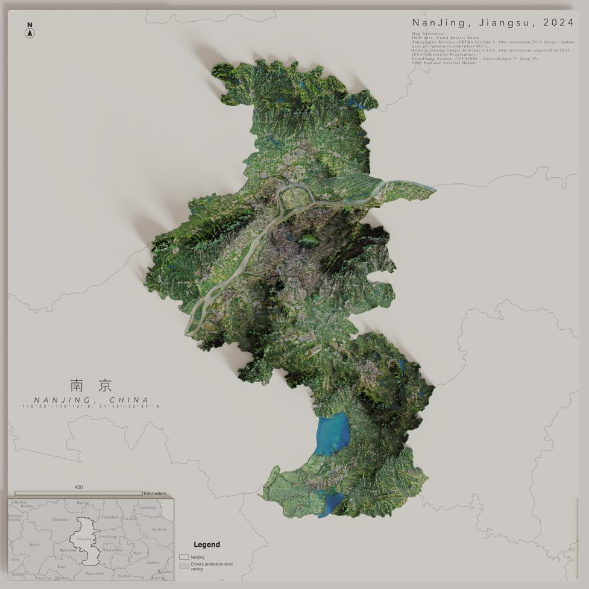
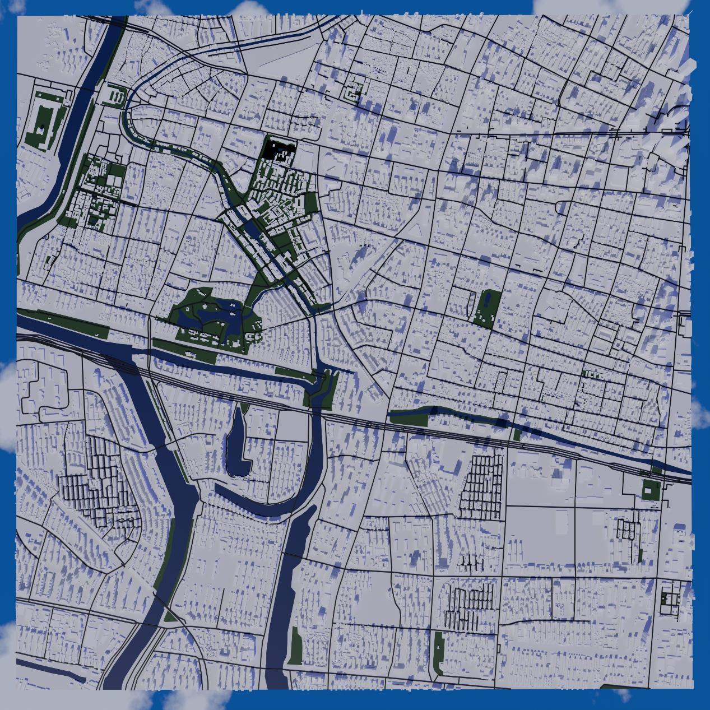
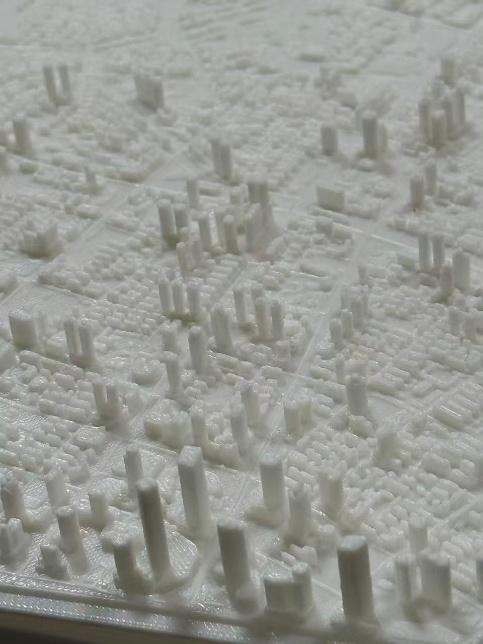

Geospatial portfolio / 2026
I turn geographic data into three-dimensional
maps and objects you can hold.
ALONG THERIDGELINE
From above, a ridge looks like a line. From within the landscape, it becomes a horizon.
NANJING
IN RELIEF.
How do you hold a city in your hands? In Nanjing, I used elevation data, satellite imagery and building footprints to turn a map into a physical model.



Nanjing · the whole city
Figure 15 · A citywide 3D map combining terrain and remote-sensing imagery.
Maps and model photographs by Feng Qi.
NUIST Reading Academy, 2026.
How it was made
Prepare the geography
I brought the elevation model, imagery and building footprints into a common coordinate system in QGIS before preparing the layers for modelling.
Build the digital landscape
In Blender, I built the terrain, extruded building footprints and adjusted the light and materials. The citywide and district views show how a change in scale affects what you can see.
Make it printable
I simplified and repaired the meshes so that thin structures would survive printing and changes in elevation could be read by touch.
Data sources and image credits
The figures come from my graduation project, Design and printing of 3D relief shading map in Nanjing. The terrain uses NASA SRTM and Copernicus DEM, with Sentinel-2 L2A imagery, OpenStreetMap contributors and the administrative and base maps credited in the thesis. Building heights are modelled. Read the full image credits.
The cover relief depicts Zijin Mountain, Nanjing, using Mapzen Terrain Tiles with vertical exaggeration.
SPATIAL
SANDBOX.
Start with a set of invented places. View the same coordinates as points, clusters or connections, and watch the city read differently.
Synthetic data generated in your browser. Keyboard controls: arrow keys to pan, + / − to zoom, 0 to reset.
STUDY
NOTES.
I keep the code alongside the question. These notebooks and browser experiments trace how I work with spatial data.
Showing 3 projects.
FENG
QI.
I work where geography meets making. I’m studying Urban Spatial Science at UCL CASA, with a background in GIS, 3D modelling and digital fabrication.
Read my CV PDFSelected experience
UCL CASA 2026–27
MSc Urban Spatial Science, expected September 2027. I came to UCL after undergraduate GIS studies at NUIST and exchange coursework at the University of Reading.
Nanjing Big Data Group 2025
As a GIS Data Processing Intern, I cleaned and coordinate-matched healthcare service data, made maps in ArcGIS Pro and built a public location-search and navigation website.
Turenscape, Beijing 2024
As a GIS Analysis Intern, I mapped land use and ecological sensitivity for Yueyang’s green-space plan and prepared the project visualisations and presentation materials.
Mapping and field research
I worked on terrain and hydrological mapping at Zhongshui Northeast Survey, Design and Research, used DBSCAN in Hegang planning research and organised over 100 soil and hydrological records during Lushan fieldwork.
Portfolio in numbers
- Nanjing project images
- 17
- Sandbox map layers
- 3
- Lushan field records
- 100+